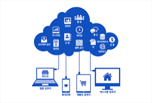
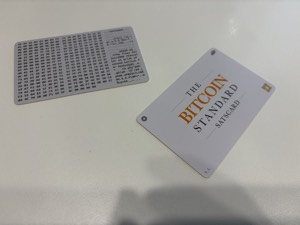
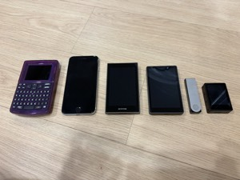
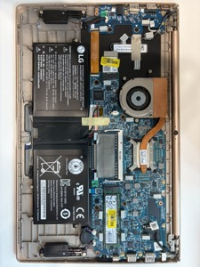
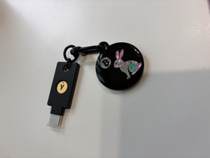
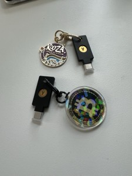

개인 보안에 대한 기록.
클라우드 서비스
애플 제로데이 사태 이후, 종단간 암호화·분산 저장·유비키까지 겹겹이 쌓아 클라우드를 쓰는 법.

탭사이너 & 새츠카드
콜드카드 Q 사태 이후, 같은 코인카이트 제품이라는 이유만으로 핫월렛보다 못 믿게 되어버린 탭사이너와 새츠카드 이야기.

애증의 COLDCARD Q
누구보다 아끼고 추천하던 기기였는데, 엔트로피 부족 사건으로 신뢰가 무너지기까지의 이야기.

에어갭 노트북(1)
콜드월렛으로 쓰려던 계획을 다크스키피 공격 때문에 접고, 입력은 키보드·카메라, 출력은 화면뿐인 단방향 정보 금고로 만들기까지.

물리적 보안키 - YUBIKEY (2)
age-plugin-yubikey로 문서를 잠그고, 맥OS·리눅스 로그인 자체를 유비키로 걸어서 내 손으로 진짜 에어갭 컴퓨터를 완성한 이야기.

물리적 보안키 - YUBIKEY (1)
지인의 소개로 산 물리적 보안키 유비키. 비번을 알아도 뚫을 수 없는 이유와, 강력한 보안이 주는 소소한 불편함까지.
